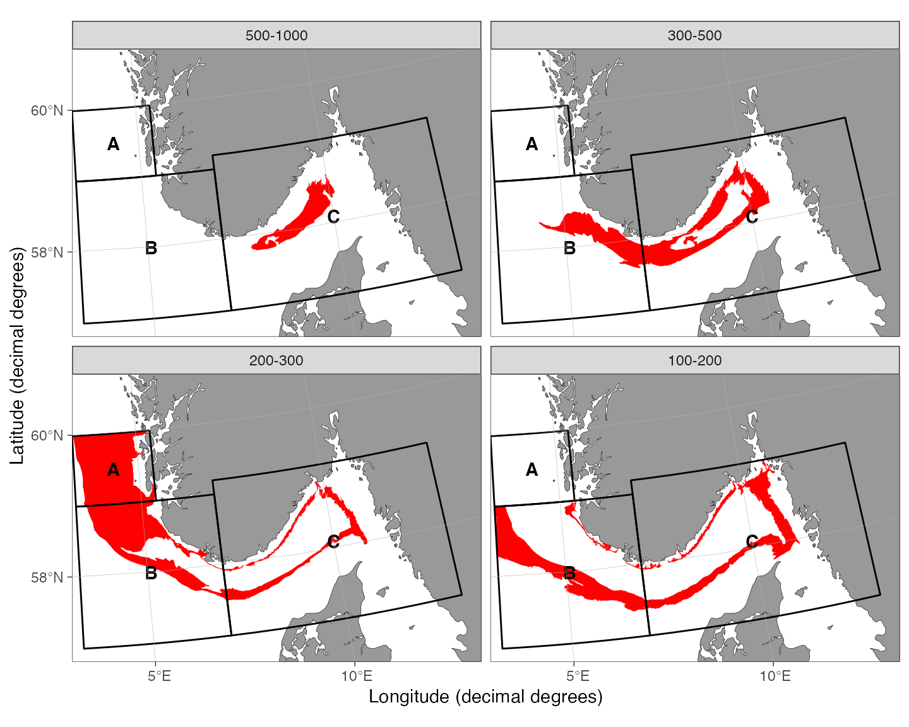
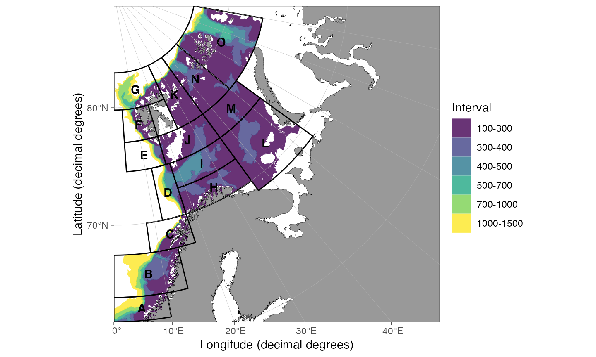

Gallery of strata system examples
Mikko Vihtakari (Institute of Marine Research)
25 January, 2022
Source:vignettes/Examples.Rmd
Examples.RmdIntroduction
This document contains examples of strata systems generated for various species needed by the author. The decisions behind the strata systems are not justified here and this document should be seen as a show piece of how the package can be used and a gallery for people working with stock assessment at IMR.
Setup
We use General Bathymetric Chart of the Oceans 15-arcsecond 2021 grid as bottom depth information to model the vertical distribution of the species. Since the file is 7.5 Gb, it is best to download the file to a central location on your computer and refer to that position instead of including the file in every project:
link <- "~/Desktop/gebco_2021/GEBCO_2021.nc" # Link to bathymetry dataPackages required to run the examples:
Examples
Greater argentine in the North Sea
geostrata.df <- data.frame(lon.min = c(3.2, 3.2, 7),
lon.max = c(5.4, 7, 13),
lat.min = c(59, 57, 57),
lat.max = c(60, 59, 59.2)
)
depths.vec <- c(100, 200, 300, 500, 1000)
boundary.vec <- c(3, 13, 57, 61)
## Strata polygons vs. stations ####
pols <- strataPolygon(
bathy = link,
depths = depths.vec,
boundary = boundary.vec,
geostrata = geostrata.df,
fragment.area = 100
)
## Plot
plot(pols)There are no stations in the shallowest strata of A and the function fails to remove a small fjord fragments:
pols$strata <- pols$strata %>% filter(!(geostrata.name == "A" & to == -100))
pols$strata <- smoothr::drop_crumbs(
pols$strata,
units::set_units(50, "km^2", mode = "standard")
)
plot(pols, facetted = TRUE)
Greenland halibut continental slope, Norway (EggaNord)
This strata system attempts to mimic the strata system for EggaN survey index used in AFWG 2021 assessment as closely as possible. The calculus for the strata area used in stock assessment have been lost and they are not reproducible.
geostrata.df <- data.frame(
lon.min = c(3, 10, 10, 8),
lon.max = c(16, 17.3, 17.3, 17.3),
lat.min = c(76, 73.5, 70.5, 68),
lat.max = c(80, 76, 73.5, 70.5)
)
depths.vec <- c(400, 500, 700, 1000, 1500)
boundary.vec <- c(0, 17.3, 68, 80)
pols <- strataPolygon(
bathy = link,
depths = depths.vec,
boundary = boundary.vec,
geostrata = geostrata.df,
fragment.area = 400
)
plot(pols, facetted = TRUE)
Greenland halibut in West Greenland
geostrata.df <- data.frame(
lon.min = c(-58, -58),
lon.max = c(-51, -51),
lat.min = c(64.2, 62.4),
lat.max = c(66.2, 64.2)
)
depths.vec <- c(400, 1500)
boundary.vec <- c(-58, -51, 62, 67)
pols <- strataPolygon(
bathy = link,
depths = depths.vec,
boundary = boundary.vec,
geostrata = geostrata.df,
fragment.area = 1000
)
plot(pols, rotate = TRUE)